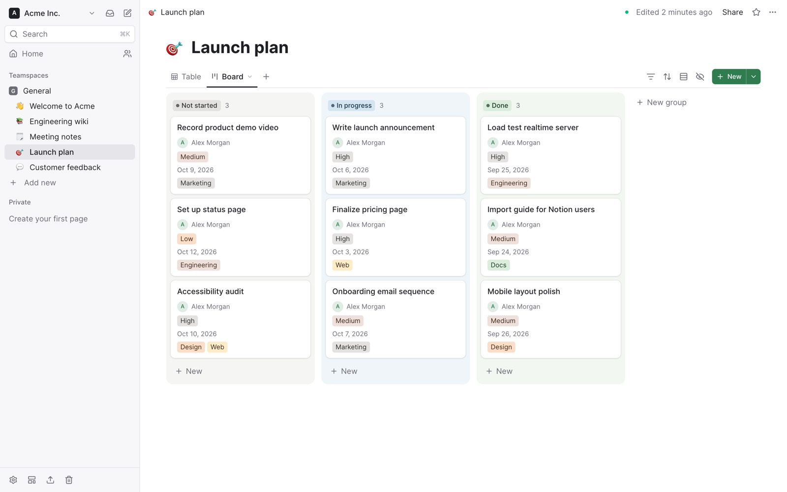

The open-source Notion alternative you host yourself
Pages, databases and realtime collaboration on your own server, with a built-in MCP server so Claude and other AI assistants can search, read and edit your workspace, only after you approve them.

Everything a team wiki and project tracker needs
Write docs, plan work and keep a knowledge base in one place, without handing your data to someone else's cloud.
Pages and a block editor
Nested pages, slash commands, markdown shortcuts, callouts, LaTeX, Mermaid diagrams, columns, embeds, comments, mentions and full page history.
Databases where every row is a page
Table, board, calendar, gallery, list, timeline, chart and form views, with relations, formulas, rollups, filters and row templates.
Realtime and offline
Edit the same page together with live cursors. Pages you opened keep working without a connection and sync when you are back.
Built for AI assistants
Connect Claude or any MCP client over OAuth 2.1. Optional AI writing, AI properties, chat and agents that automations run on database rows, with Anthropic, OpenAI, Google or a local model.
Bring your pages from Notion
Import a Notion Markdown & CSV export, Markdown files, a folder or a CSV. Export pages as Markdown or PDF, and whole workspaces as a ZIP.
Ready for a team
Teamspaces, page and property permissions, guests, SSO with OIDC and SAML, SCIM, two-step verification, passkeys and an audit log.
Let AI assistants work in your workspace, on your terms
Leafdesk has a remote MCP server at /mcp. Claude, Claude Code, Codex
and other MCP clients connect over OAuth 2.1 and can search, read, create and update pages and
database rows, and the changes show up live for everyone on the page.
- You approve every app on a consent screen, read-only or read-write.
- Revoke access any time in My account → Connected apps.
- Nothing is lost: a version is saved before every AI edit, and page history shows which app changed what.
- Permissions still apply: an assistant only sees what the person who approved it can see.
Up and running in a minute
One docker compose up on your own server. Leafdesk and PostgreSQL run
side by side, and your pages and files stay with you.
mkdir leafdesk && cd leafdesk
curl -fsSLO https://raw.githubusercontent.com/esmworks/leafdesk/main/docker-compose.yml
curl -fsSL https://raw.githubusercontent.com/esmworks/leafdesk/main/.env.example -o .env
# set BETTER_AUTH_SECRET in .env to the output of: openssl rand -base64 32
docker compose up -dThen open http://localhost:3000 and create an account. The quick start guide covers versions, upgrades, S3 storage, email and running behind a domain.
Questions
Short answers. The README has the details.
Is Leafdesk free?
Yes. Leafdesk is open source under the Apache-2.0 license, with no paid tier and no limits on pages, members or storage. You only pay for the server you run it on.
Can I move my workspace from Notion?
Export your Notion pages or workspace as Markdown & CSV with subpages, and import the ZIP. Pages keep their tree, databases come in with their column types, and images and attachments are uploaded.
Which AI assistants can connect?
Any client that speaks the Model Context Protocol with OAuth, such as Claude, Claude Code and Codex. The built-in AI writing, AI properties and chat work with Anthropic, OpenAI, Google, OpenAI-compatible servers, or a local model with Ollama or LM Studio, and stay off until you set up a provider.
Where is my data stored?
In your own PostgreSQL database, with uploaded files on disk or in S3-compatible storage you choose. Leafdesk doesn't send your pages anywhere else unless you turn on an AI provider.
Which languages does it support?
The interface is in English, Turkish, German, Spanish and French, taken from the browser or chosen in My account.
Run your own workspace
Star the project, try it with Docker, or open an issue with what you need.